100% Gratuito · Sin Fines de Lucro
Acceso universal y libre. Sin costo ni barreras de entrada para que cualquier estudiante técnico pueda formarse al nivel de la industria global.
Este es el documento renderizado por el navegador utilizando exclusivamente las etiquetas nativas de HTML sin ninguna regla de estilos, Flexbox, Grid ni aceleración por GPU.
| Eje Temático | Descripción del Estándar | Estado |
|---|---|---|
| Diseño Adaptable (Mobile-First) | Pensado primero para smartphones y adaptado con Media Queries a desktop. | Aprobado |
| Accesibilidad e Inclusión | Estándares WCAG AAA, soporte de lectores de pantalla y contraste nativo. | Aprobado |
| HTML5 Semántico | Jerarquía estructural para motores de búsqueda: <header>, <main>, <footer>. | Aprobado |
| CSS3 Moderno | Variables CSS, maquetación multidimensional y animaciones a 60 FPS. | [Activar CSS3 Ahora] |

"Un sitio web que no se adapta hoy, es una experiencia que excluye."
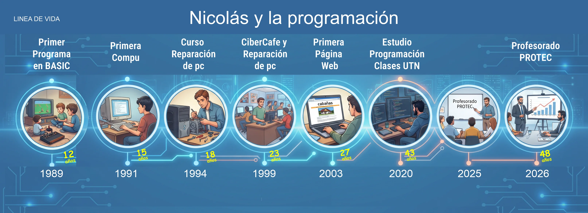
La semántica otorga significado estructural real, accesibilidad universal para lectores de pantalla y optimización nativa para motores de búsqueda.
Los lectores de pantalla no saben qué es prioritario. Cero accesibilidad y mantenimiento complejo.
Interpretable por navegadores, robots e inteligencias artificiales. La base del desarrollo web profesional.
"La actualización tecnológica adquiere su verdadero valor cuando se comparte en el aula y abre oportunidades reales de formación y trabajo para nuestros estudiantes."
Quedo a plena y grata disposición de la Prof. Celeste Derra y del honorable tribunal para preguntas, diálogo y reflexiones pedagógicas.
Dante Nicolás Martínez
Técnico Universitario en Programación · Auxiliar Docente UTN FRSR
"Esta experiencia que vengo a mostrarles resume justamente ese recorrido."
100% Gratuito · Sin Fines de Lucro
Acceso universal y libre. Sin costo ni barreras de entrada para que cualquier estudiante técnico pueda formarse al nivel de la industria global.
Metodología ABP en Vivo
Aprendizaje basado en proyectos reales (ABP), iterando directamente en el navegador con pruebas automáticas integradas.
Comunidad Global & Ecosistema
Más de 100.000 graduados trabajando en gigantes tecnológicos: Amazon, Spotify, Apple, Google y Microsoft.
Estándares Demandados en la Industria
HTML5 semántico, CSS3 moderno, Flexbox, CSS Grid y accesibilidad universal (a11y) — las bases insustituibles del software.
"El desafío no era solo escribir código, sino construir experiencias digitales que funcionaran en distintos contextos y dispositivos."
Diseño Mobile-First
El diseño se concibe primero para pantallas móviles y se expande progresivamente con media queries.
"Un sitio web que no se adapta hoy, es una experiencia que excluye."
✦ Carrusel Inmersivo Continuo en Loop · Pasa el cursor para pausar · Clic para ampliar
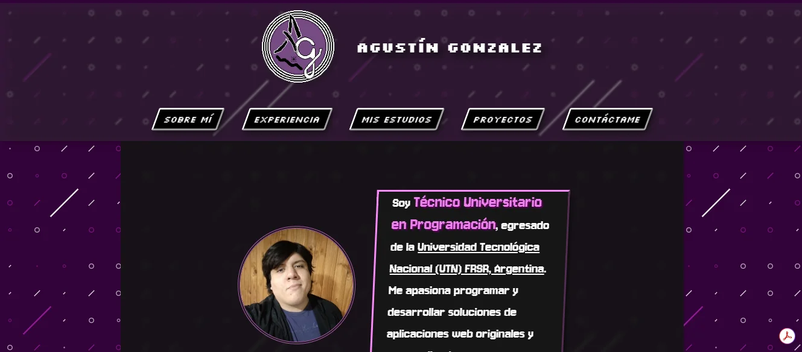
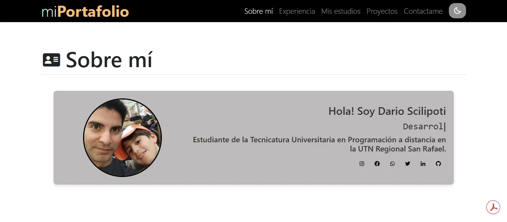
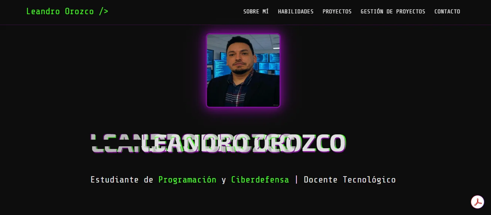
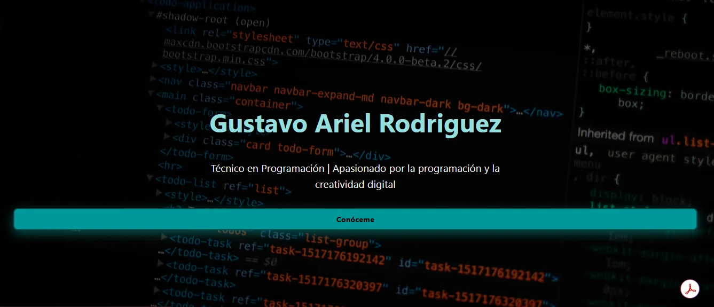
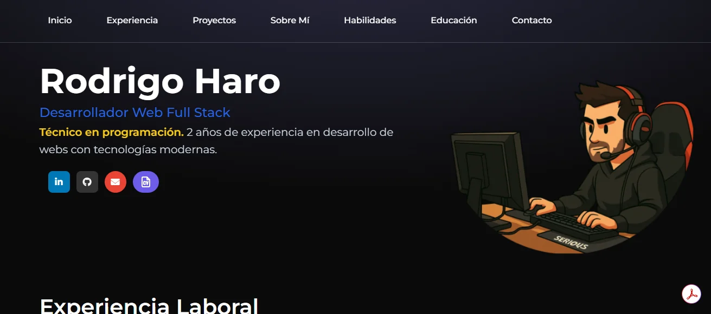
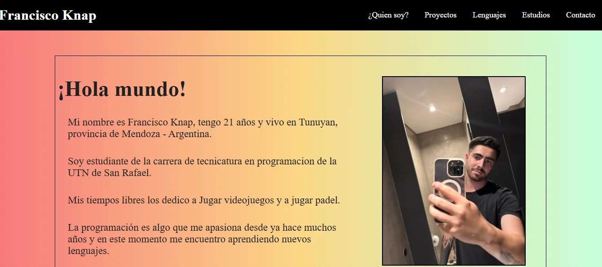
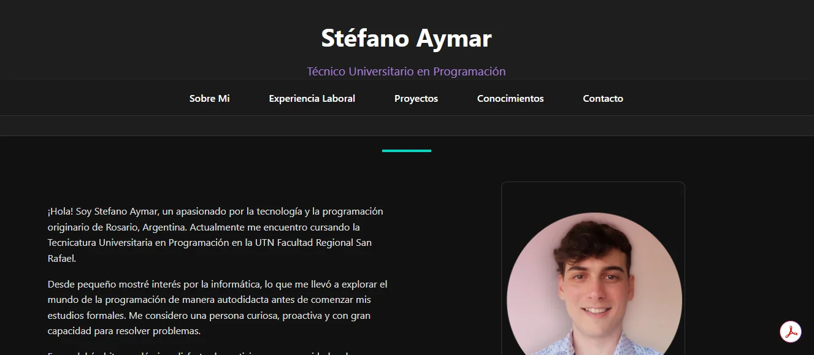
Una Sola Habitación Monolítica
Desarrollo lineal sin modularizar · HTML/CSS puro
Casa Organizada por Componentes
Vue.js · Arquitectura Modular & Reactiva
<TheNavbar />
Navegación encapsulada
<ProjectsGrid />
Galería reactiva reutilizable
<ContactForm />
Validación y estado propio
<ThemeToggle />
Estado global de tema oscuro
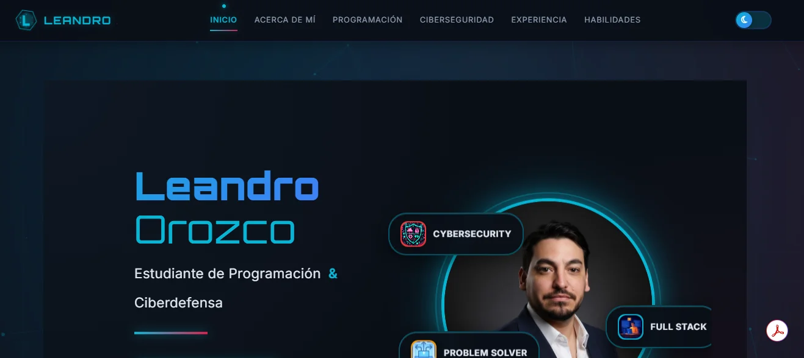
Comp. <Header />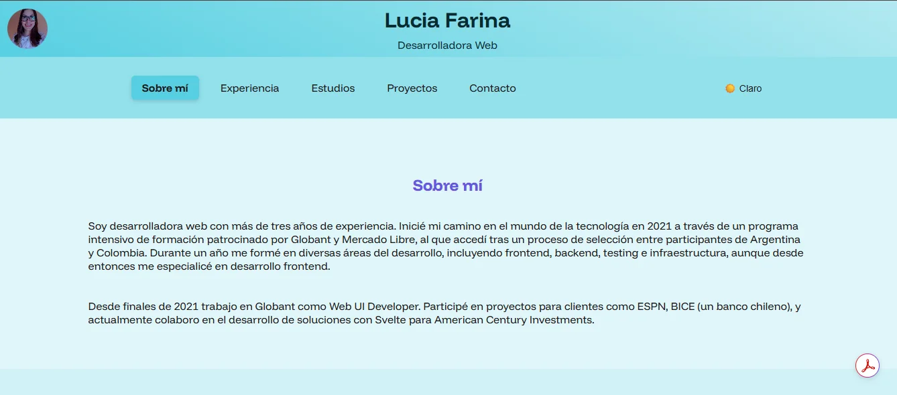
Comp. <Proyectos />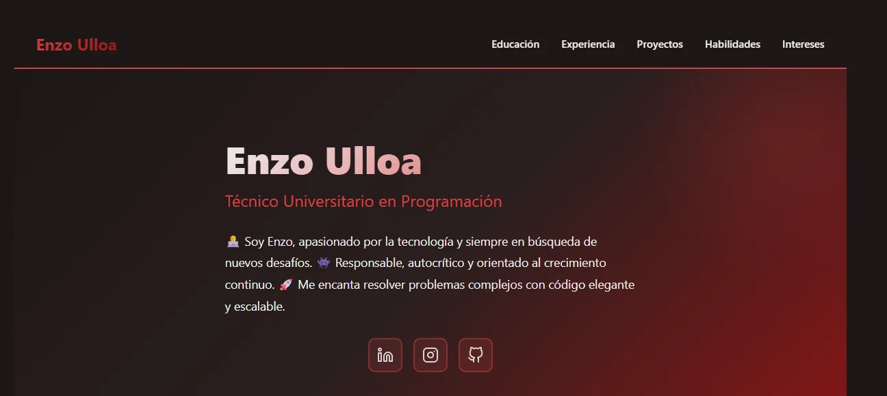
Estado Reactivo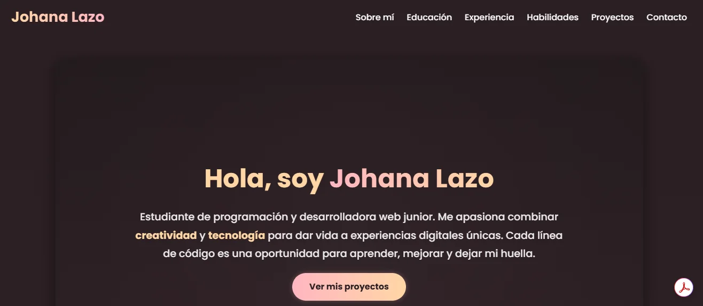
Slots & Props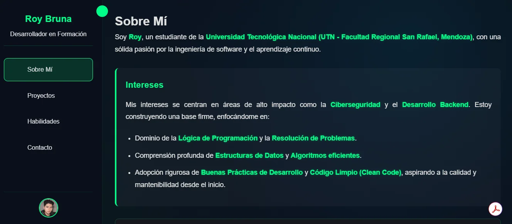
Despliegue Netlify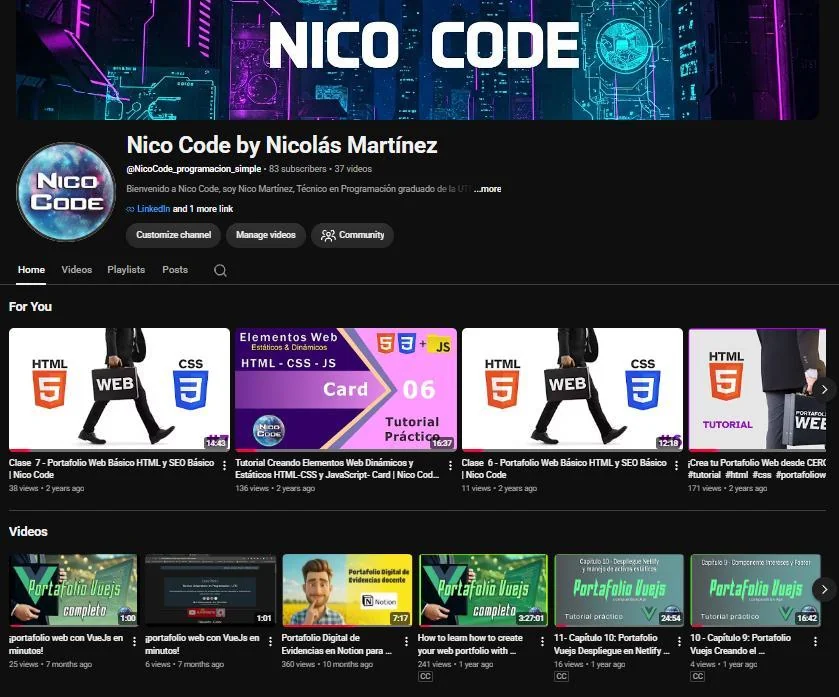
"Nico Code"
Canal educativo con clases completas, paso a paso y gratuitas para futuros técnicos de Mendoza.
"A lo largo de estas 300 horas, comprobé que el aprendizaje técnico se vuelve significativo cuando completamos el ciclo: empezando por comprender estándares internacionales, construir soluciones reales, enseñar públicamente facilitando el camino a nuestros alumnos, esto nos ayuda a perfeccionar nuestras clases y no parar de seguir profesionalizando en nuestra vocación docente para la educación."
🏫 Vinculación Estratégica con la ETP: